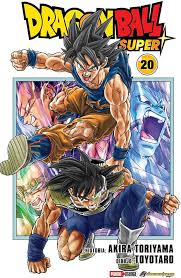

| INFORMACION | MANGA |
| Moro, popularmente conocido bajo el infame seudonimo del Astrofago Moro,
Hoshikui no Moro, es un malvado hechicero y mago genocida extremadamente poderoso
que amenaza con erradicar todas las formas de vida existentes en el Universo 7 hace
mas de diez millones de años hasta ser derrotado por las deidades Kaio-shin y ser
encerrado en la prision del cuartel general de la Policia Galactica, la cual es la
Patrulla Galactica en la actualidad.
Aparece por primera vez como el antagonista principal del Arco de los Prisioneros
de la Patrulla Galactica del manga de Dragon Ball Super.
Creacion y concepto: Toyotaro queria que Moro se sintiera como un ser completamente malvado, un tipo que, al igual que el Gran Rey Demonio Piccolo, podia mirar y sentir instantaneamente que tenia que ser derrotado. El mangaka no queria dejar la sensacion de que este era un villano que despues podria terminar convirtiendose en un aliado. Para lograr esto, el baso el diseño de Moro en demonios de estilo occidental, especialmente aquellos que tienen la forma de una cabra, ademas de otorgarle una capa y capucha que invoque al angel de la Muerte del XV. Para Toyotaro, los cuernos son la parte mas dificil de dibujar a Moro, ya que, a diferencia de los cuernos de una cabra normal, los de este se enrollan hacia arriba al final. Aunque al mismo diseño al propio Moro, termino por lamentar incluir este elemento. Toyotaro estaba teniendo problemas para que los cuernos de Moro fueran exactamente correctos sin usar una referencia, asi que el fue en busca de figuras fisicas de cabras para trabajar, pero no pudo encontrar una que satisfaga sus necesidades. Eventualmente, el mangaka termino agregando a los cuernos de una figura de cabra con masilla para crear su propio modelo de referencia. Diseño: Prisionero de la Patrulla Galactica Toyotaro Aspecto de Moro tras perder su fuerza magica. Moro posee el aspecto de un viejo muflon asiatico o carnero antropomorfico de piel azul. Tiene los ojos de color rojo, una larga barba blanca, con dos grandes cuernos saliendo de su cabeza, largas uñas oscuras y porciones de pelaje en los hombros, asi como una protuberancia en la parte superior de su espalda. Suele llevar una capa marron con capucha, durante la mayor parte del tiempo. Esta vestimenta de combate es solo un minimo entre su cinturon, pantalones holgados, y los vendajes colocados en sus antebrazos y pantorrillas. Tambien es bastante alto pese a que su cuerpo a la vista ajena parece bastante delgado y fragil. Despues de haber absorbido toda la energia de Son Goku y Vegeta, su aspecto sufre un cambio considerable. Moro se vuelve notablemente mas joven con una postura erguida y un rostro menos arrugado. Asimismo obtiene una mayor musculatura y su barba se reduce dramaticamente a una longitud mas adaptable. El simbolo grabado en el cinturon de Moro en realidad se trata del equivalente de la letra a en el alfabeto del idioma vialactense. |
 |
| LINK | |
| visita DRAGON BALL SUPER(MORO).com en una nueva venta | |